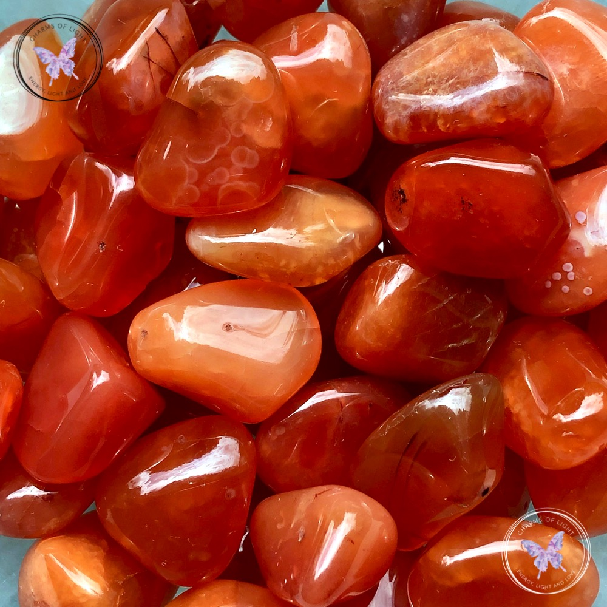

Carnelian

Information
Information
Carnelian is found on the shores of Brazil, India, Egypt, Uruguay and the Amazon. Carnelian is also known as "the sunset stone" because the beautiful color of the stone reminds at a sunset. Carnelian infuses the body with life and light. It stimulates the muscles, helps the oxygen to find its free flow. The stone is very helpful for those who suffer from lower back problems or rheumatism. For no reason the Carnelian stone invites you to write, paint, dance and sing and it does this by stimulating warmth and heat, letting energy flow and encouraging you to embrace your inner child and say yes to spontaneity.
Health Benefits
Link-TextOutfitInspos
Some outfits inspos who match perfectly with the black green stone